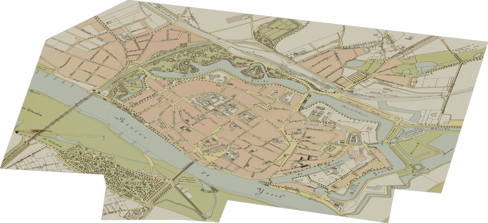

Stap in het verleden
Sleep de schuif van het originele archiefbeeld naar de ingekleurde reconstructie.

 Origineel
Reconstructie
Origineel
Reconstructie
De Brink — een eeuwenoud tafereel, opnieuw tot leven gewekt
Ontdek eeuwen geschiedenis, verborgen in de straten van Deventer. Luister naar verhalen, vergelijk verleden en heden, en zie de stad zoals die er lang geleden uitzag.
Zes manieren om de rijke geschiedenis van Deventer te beleven, direct vanaf je telefoon.
Elke plek heeft zijn eigen verteld verhaal. Doe je oortjes in, wandel door de stad en laat de geschiedenis tot je spreken — ook met je scherm uit. Een overkoepelende stadsgeschiedenis luister je als introductie.
Schuif van een oude foto of prent naar een ingekleurde reconstructie en zie hoe een plek er vroeger werkelijk uitzag — alsof een tijdmachine je er middenin zet.
Leg eeuwenoude stadsplattegronden over de huidige kaart. Schakel zelf welke kaart je onder je voeten ziet verschijnen.
Kant-en-klare routes door themagebieden zoals de Hanze of religieus erfgoed, inclusief voetgangersnavigatie van plek naar plek.
Krijg een trilling en melding zodra je bij een nieuwe locatie aankomt — zelfs met je telefoon in je broekzak. Geen vaste route nodig.
Verzamel een badge bij elke bezochte locatie. Maak een herstelcode aan om je voortgang mee te nemen naar een ander toestel.
Sleep de schuif van het originele archiefbeeld naar de ingekleurde reconstructie.
Origineel
Reconstructie
De Brink — een eeuwenoud tafereel, opnieuw tot leven gewekt
In drie eenvoudige stappen begin je je reis door de tijd.
Haal straks de gratis app op en ga naar het centrum van Deventer. Werkt het best op locatie — maar verkennen vanuit huis kan ook.
De app merkt wanneer je in de buurt van een historische plek bent. Wandel op je eigen tempo — er is geen vaste route.
Luister naar verhalen, vergelijk oude foto's en ontdek de verborgen lagen van de stad om je heen.
Middeleeuwse kerken, Hanze-pakhuizen, eeuwenoude marktpleinen — elk met zijn eigen verhaal.



Van de Brink tot het Bergkwartier — een wandeling door 1000 jaar geschiedenis.
Beginnend in Deventer — meer steden volgen.
De app is bijna klaar. Laat je e-mail achter en we laten het je weten zodra Walk Through Time in de stores verschijnt.
We gebruiken je e-mail alleen om je te laten weten dat de app live is — niets anders.